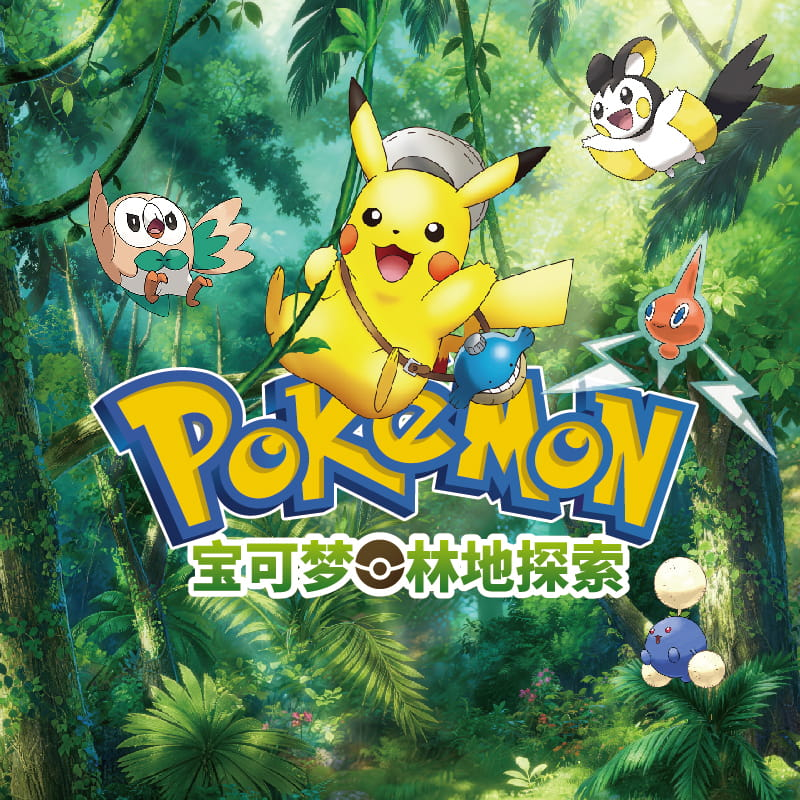
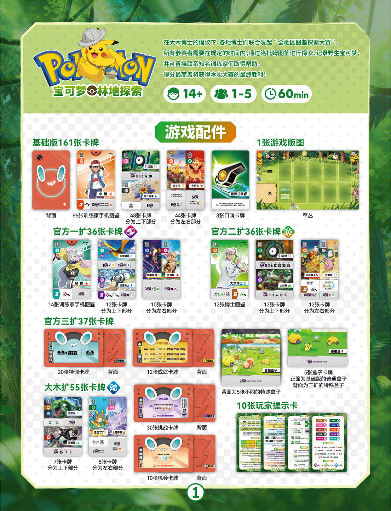
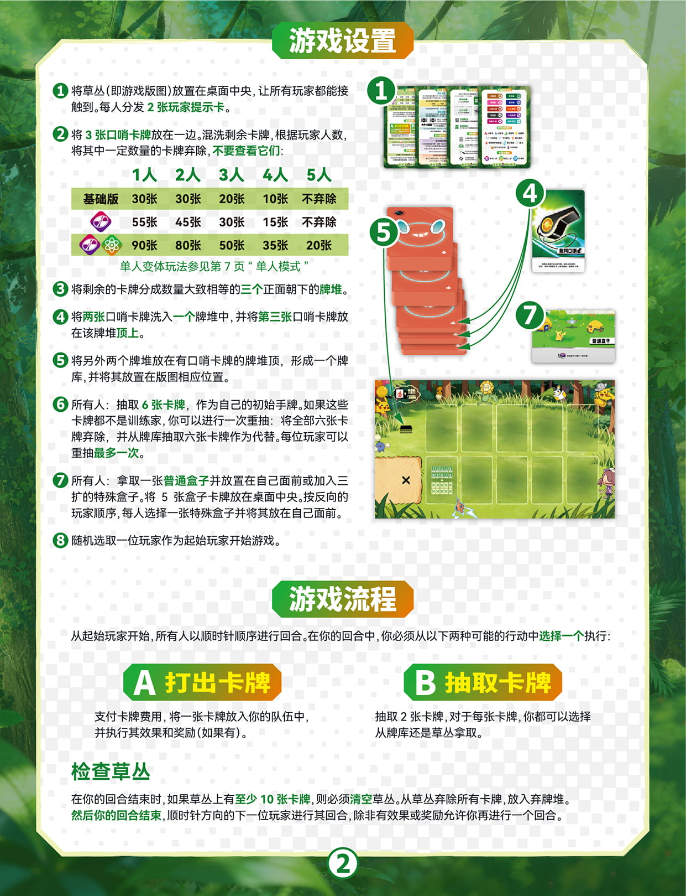
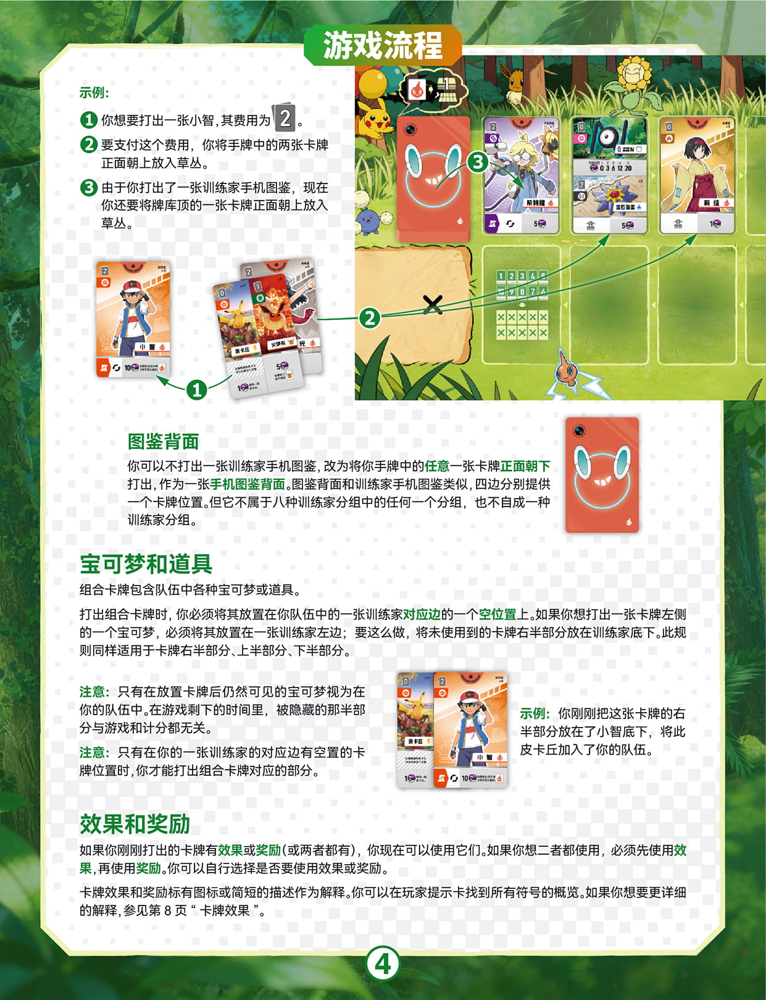
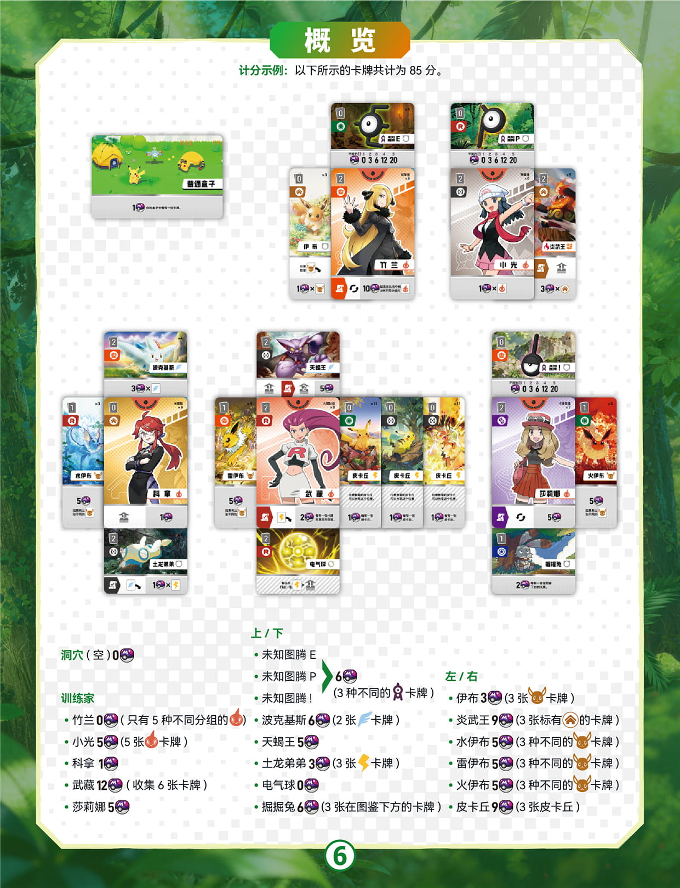
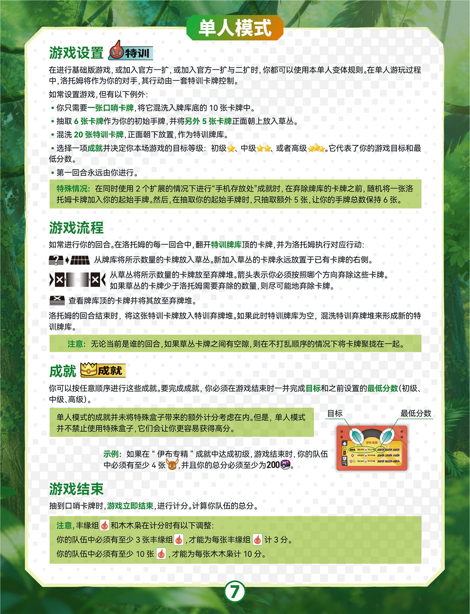
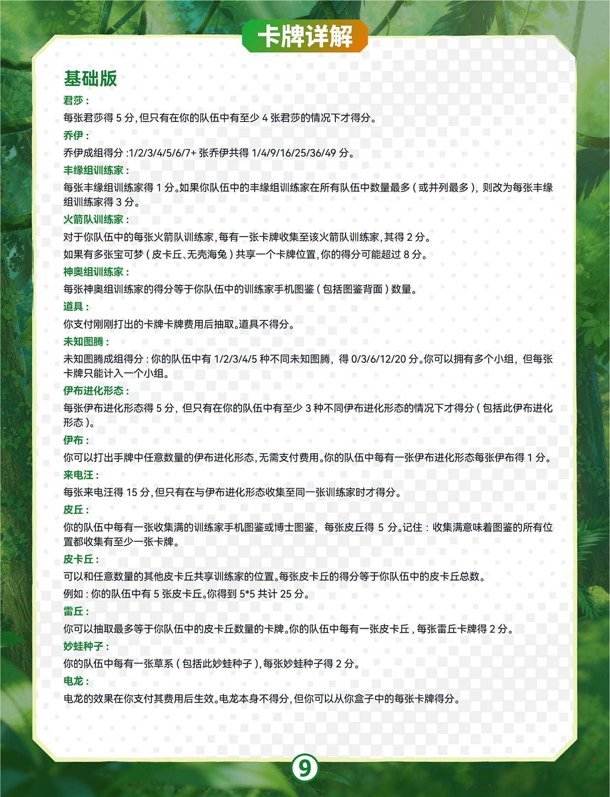
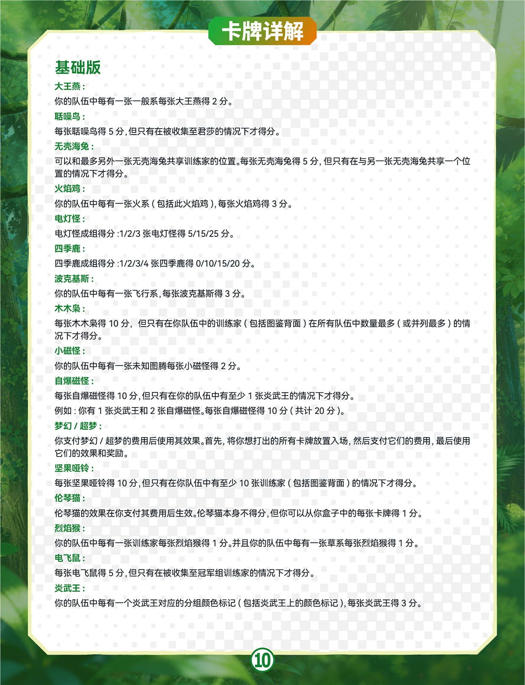
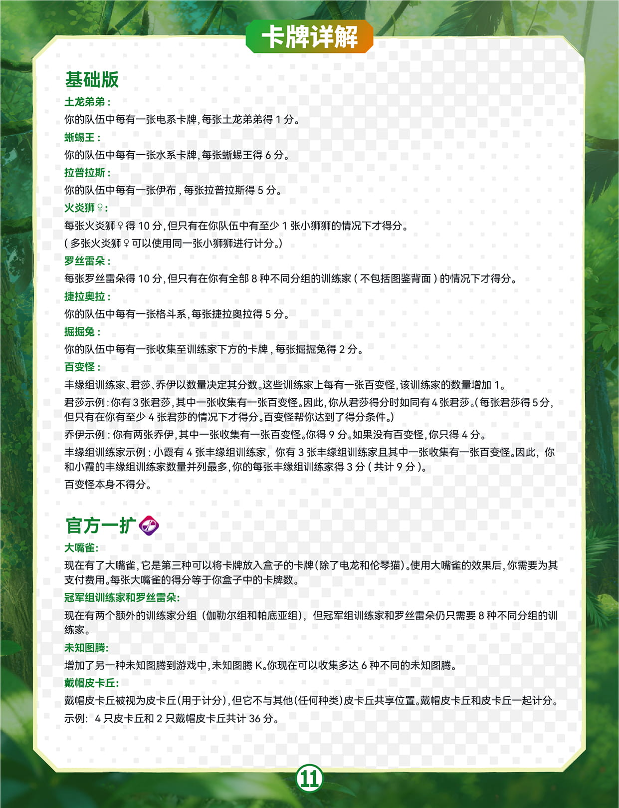
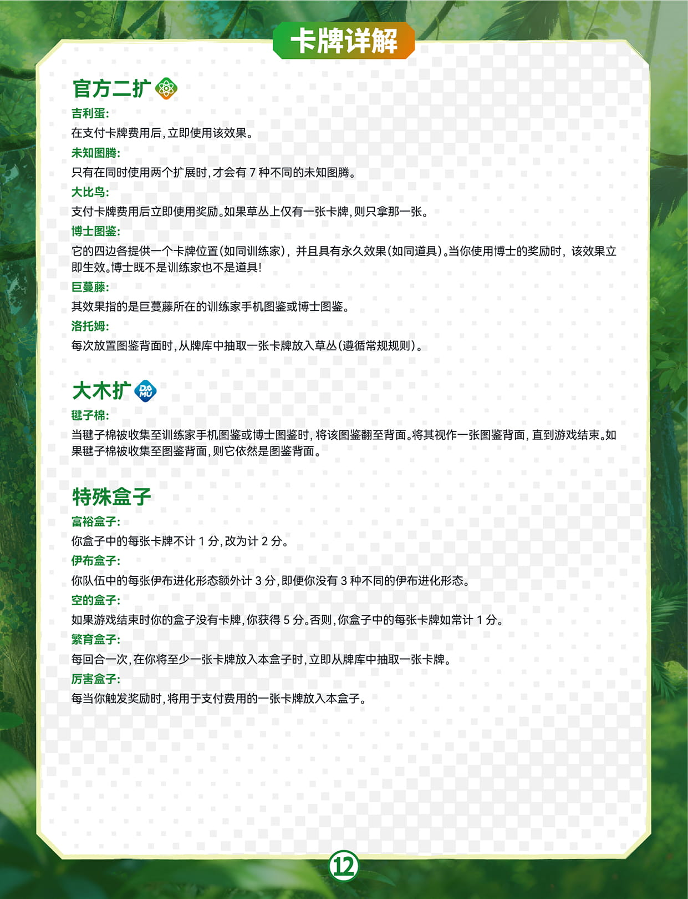

🌳 宝可梦林地探索
全地区图鉴探索大赛 · 宝可梦主题卡牌游戏（1–5 人，含单人模式）
📌 说明
本页正文由规则书图片逐页转录整理，共 13 页：基础版 + 官方一扩 / 二扩 / 三扩 + 大木扩 + 单人模式 + 多人进阶（挑战 / 机会玩法）+ 卡牌效果 + 卡牌详解。正文与表格中的小图标均直接裁剪自原书扫描图，与原图完全一致；完整原图见文末「原版规则书图片」。本作玩法机制与《Forest Shuffle（森林深处）》一致，也可作为该游戏的中文主题速查使用。
游戏简介
在大木博士的倡议下，各地博士们联合发起“全地区图鉴探索大赛”。所有参赛者需要在规定的时间内，通过洛托姆图鉴进行探索、记录野生宝可梦，并可直接联系知名训练家们取得帮助。得分最高者将获得本次大赛的最终胜利！
- 打出训练家手机图鉴，围绕训练家收集宝可梦与道具，组成你的队伍
- 打出卡牌时需支付费用——支付的卡牌会正面朝上进入中央的草丛，供所有玩家取用
- 牌库中藏有 3 张口哨卡牌：第 3 张口哨被翻开时游戏立即结束，进行计分
游戏配件
基础版 161 张卡牌
- 66 张训练家手机图鉴（每位训练家一张，卡面有一位训练家）
- 48 张卡牌，分为上下两部分（组合卡牌）
- 44 张卡牌，分为左右两部分（组合卡牌）
- 3 张口哨卡牌
- 1 张游戏版图（草丛）
官方一扩 36 张卡牌
- 14 张训练家手机图鉴
- 12 张卡牌，分为上下部分
- 10 张卡牌，分为左右部分
官方二扩 36 张卡牌
- 12 张博士图鉴
- 12 张卡牌，分为上下部分
- 12 张卡牌，分为左右部分
官方三扩 37 张卡牌
- 20 张特训卡牌（单人模式使用）
- 12 张成就卡牌（单人模式使用）
- 5 张盒子卡牌：正面为基础版的普通盒子，背面为 5 张不同的特殊盒子（三扩）
大木扩 55 张卡牌
- 7 张卡牌，分为上下部分
- 8 张卡牌，分为左右部分
- 30 张挑战卡牌
- 10 张机会卡牌
公共配件
- 1 张游戏版图（草丛）
- 10 张玩家提示卡（所有符号的概览）
游戏设置
- 将草丛（即游戏版图）放置在桌面中央，让所有玩家都能接触到。每人分发 2 张玩家提示卡。
- 将 3 张口哨牌放在一边。混洗剩余卡牌，根据玩家人数，将其中一定数量的卡牌弃除，不要查看它们：
使用内容 1 人 2 人 3 人 4 人 5 人 基础版 30 张 30 张 20 张 10 张 不弃除 基础版 + 一扩 55 张 45 张 30 张 15 张 不弃除 基础版 + 一扩 + 二扩 90 张 80 张 50 张 35 张 20 张 单人变体玩法参见下文“单人模式”。
- 将剩余的卡牌分成数量大致相等的三个正面朝下的牌堆。
- 将两张口哨卡牌洗入其中一个牌堆中，并将第三张口哨卡牌放在该牌堆顶上。
- 将另外两个牌堆放在有口哨卡牌的牌堆顶，形成一个牌库，并将其放置在版图相应位置。
- 所有人：抽取 6 张卡牌，作为自己的初始手牌。如果这些卡牌都不是训练家，你可以进行一次重抽：将全部六张卡牌弃除，并从牌库抽取六张卡牌作为代替。每位玩家可以重抽最多一次。
- 所有人：拿取一张普通盒子并放置在自己面前，或加入三扩的特殊盒子。将 5 张盒子卡牌放在桌面中央。按反向的玩家顺序，每人选择一张特殊盒子并将其放在自己面前。
- 随机选取一位玩家作为起始玩家开始游戏。
游戏流程
从起始玩家开始，所有人以顺时针顺序进行回合。在你的回合中，你必须从以下两种可能的行动中选择一个执行：
- A 打出卡牌：支付卡牌费用，将一张卡牌放入你的队伍中，并执行其效果和奖励（如果有）。
- B 抽取卡牌：抽取 2 张卡牌，对于每张卡牌，你都可以选择从牌库还是草丛拿取。
行动 B：抽取卡牌
进行本行动时，抽取两张卡牌，每次一张，将它们加入你的手牌。你在此行动中每次抽取卡牌时，都可以选择是要从牌库顶抽取一张正面朝下的卡牌，还是要从草丛抽取一张正面朝上的卡牌（游戏开始时，草丛处于空置状态）。
⚠️ 重要
你的手牌上限为 10 张。如果你有 9 张手牌，你只能抽取一张卡牌。
口哨卡牌
牌库底三分之一的卡牌中包含 3 张口哨卡牌。你抽到一张口哨卡牌时，必须将其正面朝上放在草丛旁边，并立即从牌库抽取一张卡牌作为代替。第三张口哨卡牌被抽出时，游戏立即结束。
检查草丛
在你的回合结束时，如果草丛上有至少 10 张卡牌，则必须清空草丛：从草丛弃除所有卡牌，放入弃牌堆。然后你的回合结束，顺时针方向的下一位玩家进行其回合，除非有效果或奖励允许你再进行一个回合。
行动 A：打出卡牌
每张卡牌都有一位训练家或两种宝可梦：
- 每张训练家手机图鉴卡牌上有一位训练家，你可以围绕其放置宝可梦或道具。训练家是你队伍的基础。
- 所有其他卡牌都由两部分组合而成：要么横向分为上下两部分，要么纵向分为左右两部分。每个部分都有一种宝可梦或道具。
打出一张卡牌：要从手牌中打出一张卡牌，你必须先支付其费用，将手牌中对应数量的（其他）卡牌正面朝上放置在草丛中。打出一张组合卡牌时，选择其中一半打出，仅需支付这部分的费用。
一般情况下，你可以使用任意卡牌用来支付费用。但对于有些宝可梦，如果你用特定卡牌进行支付，其会提供奖励（见下文“奖励”）。
然后，将该卡牌正面朝上放在你自己面前。你打出的所有卡牌组成你的队伍。
⚠️ 注意
组合卡牌必须总是放置在训练家手机图鉴旁边（见下文“宝可梦和道具”）。
打出示例
- 你想要打出一张小智，其费用为 2。
- 要支付这个费用，你将手牌中的两张卡牌正面朝上放入草丛。
- 由于你打出了一张训练家手机图鉴，现在你还要将牌库顶的一张卡牌正面朝上放入草丛。
卡牌与队伍
卡牌布局
所有卡牌均包含以下信息（部分为可选）：
| 信息 | 说明 |
|---|---|
| 费用 | 打出该卡（部分）需要支付的卡牌数量 |
| 名称 | 训练家 / 宝可梦 / 道具的名称 |
| 插画 | 卡面绘图 |
| 分数 | 游戏结束时该卡（部分）提供的分数 |
| 游戏中该宝可梦的数量 | 该宝可梦在整套牌中的张数 |
| 效果（部分卡牌有） | 打出后可使用的即时 / 永久效果 |
| 奖励（部分卡牌有） | 用对应卡牌支付费用时可获得的奖励 |
| 分组颜色标记 | 训练家分组颜色的标记，用于判定奖励 |
| 属性分类图标 | 卡牌的属性分类符号（详见玩家提示卡） |
训练家手机图鉴
训练家手机图鉴卡牌上、下、左、右四边各提供一个卡牌位置，可供收集宝可梦。只要没有卡牌打出到卡牌位置上，该位置视为空置；如果一张训练家手机图鉴四边各有至少一张卡牌，视该图鉴被收集满。
🌱 草丛符号规则
每当你打出一张训练家手机图鉴时，你必须抽取牌库顶的一张卡牌，并将其正面朝上放在草丛中。游戏期间，草丛上的符号将提醒你这条规则。
注意：这可能会导致口哨卡牌被翻开。如果出现此情况，按照“口哨卡牌”一节所述进行。
图鉴背面
你可以不打出一张训练家手机图鉴，改为将你手牌中的任意一张卡牌正面朝下打出，作为一张手机图鉴背面。图鉴背面和训练家手机图鉴类似，四边分别提供一个卡牌位置。但它不属于八种训练家分组中的任何一个分组，也不自成为一种训练家分组。
宝可梦和道具（组合卡牌）
组合卡牌包含队伍中各种宝可梦或道具。
打出组合卡牌时，你必须将其放置在你队伍中的一张训练家对应边的一个空位置上。如果你想打出一张卡牌左侧的一个宝可梦，必须将其放置在一张训练家左边；要这么做，将未使用到的卡牌右半部分放在训练家底下。此规则同样适用于卡牌右半部分、上半部分、下半部分。
⚠️ 注意
只有在放置卡牌后仍然可见的宝可梦视为在你的队伍中。在游戏剩下的时间里，被隐藏的那部分与游戏和计分都无关。
只有在你的一张训练家的对应边有空置的卡牌位置时，你才能打出组合卡牌对应的部分。
示例：你刚刚把这张卡牌的右半部分放在了小智底下，将此皮卡丘加入了你的队伍。
效果和奖励
如果你刚刚打出的卡牌有效果或奖励（或两者都有），你现在可以使用它们。如果你想二者都使用，必须先使用效果，再使用奖励。你可以自行选择是否要使用效果或奖励。
卡牌效果和奖励标有图标或简短的描述作为解释。你可以在玩家提示卡找到所有符号的概览，所有效果图标的含义见下文「卡牌效果」速查。
效果（即时 / 永久）
共有两种效果：
- 即时效果：大多数卡牌会提供一个即时效果，可以在打出后立即使用一次。
- 永久效果：道具提供永久效果，从你的下一回合开始，在游戏剩下的时间里生效。
🛼 永久效果示例
道具的效果会在你将某些卡牌放入你的队伍（比如图鉴下方）时生效。每当你将这样的一张卡牌放入你的队伍时，你可以立即使用该道具的效果。
示例：你刚刚打出了一张轮滑鞋。从你的下一个回合开始，每当你在一张训练家手机图鉴或博士图鉴下方的位置中放置一张卡牌时，你可以抓取牌库顶的一张卡牌（每当你在图鉴下方打出一张卡牌 → 抽 1 张）。
奖励
有些物种有一个带有 ✅ 符号的颜色箭头，如果你用对应卡牌支付该卡牌的费用，其提供一个奖励：要完成奖励，你用于支付的所有卡牌必须与你要打出的卡牌的卡牌分组颜色相同（即标有相同的分组颜色标记）。用组合卡牌进行支付时，只要该卡牌的任意部分有对应的分组颜色标记即可。
✅ 奖励示例
示例：你打出一张烈焰猴到你的队伍中。
- 要完成奖励，你需要用一张电飞鼠和一张乔伊进行支付。这两张卡牌的分组颜色与烈焰猴相同（并且都标有乔伊分组标记）。
- 如果你用一张君莎进行支付，而不是乔伊，就无法完成这个奖励了。
游戏结束与计分
游戏结束：第 3 张口哨卡牌被翻开时，游戏立即结束，进行计分。你不能完成你的回合。
计分：计算你的队伍中所有可见卡牌的分数总和，并加上你盒子中的卡牌数量（如果有）。这是你的分数。如果你不确定某张特定卡牌的分数，参见下文「卡牌详解」。分数最高的玩家获胜；如果出现平局，则共享胜利。
计分示例（共计 85 分）
⚠️ 转录提醒
表中的分数球与属性图标均直接裁剪自原书扫描图，与原图完全一致。各项计分依据均可在下文「卡牌详解」中查到，明细与原图合计 85 分完全吻合。
| 来源 | 卡牌 | 得分 | 计分条件 |
|---|---|---|---|
| 盒子 | 盒子（空） | 0 | 没有卡牌放在盒子上 |
| 训练家 | 竹兰 | 0 | 只有 5 种不同分组的 （不满足条件） |
| 训练家 | 小光 | 5 | 5 张 卡牌 |
| 训练家 | 科拿 | 1 | — |
| 训练家 | 武藏 | 12 | 收集 6 张卡牌 |
| 训练家 | 莎莉娜 | 5 | — |
| 上下组合 | 未知图腾 E / 未知图腾 P / 未知图腾！ | 6 | 3 种不同的 卡牌 |
| 上下组合 | 波克基斯 | 6 | 2 张 卡牌 |
| 上下组合 | 天蝎王 | 5 | — |
| 上下组合 | 土龙弟弟 | 3 | 3 张 卡牌 |
| 上下组合 | 电气球 | 0 | — |
| 上下组合 | 掘掘兔 | 6 | 3 张在图鉴下方的卡牌 |
| 左右组合 | 伊布 | 3 | 3 张 卡牌 |
| 左右组合 | 炎武王 | 9 | 3 张标有 的卡牌 |
| 左右组合 | 水伊布 | 5 | 3 种不同的 卡牌 |
| 左右组合 | 雷伊布 | 5 | 3 种不同的 卡牌 |
| 左右组合 | 火伊布 | 5 | 3 种不同的 卡牌 |
| 左右组合 | 皮卡丘 | 9 | 3 张皮卡丘 |
| 合计 | — | 85 | — |
单人模式
在进行基础版游戏，或加入官方一扩，或加入官方一扩与二扩时，你都可以使用本单人变体规则。在单人游玩过程中，洛托姆将作为你的对手，其行动由一套特训卡牌控制。
单人游戏设置
如常设置游戏，但有以下例外：
- 你只需要一张口哨卡牌，将它混入牌库底的 10 张卡牌中。
- 抽取 6 张卡牌作为你的初始手牌，并将另外 5 张卡牌正面朝上放入草丛。
- 混洗 20 张特训卡牌，正面朝下放置，作为特训牌库。
- 选择一项成就并决定你本场游戏的目标等级：初级 ⭐、中级 ⭐⭐、或者高级 ⭐⭐⭐。它代表了你的游戏目标和最低分数。
- 第一回合永远由你进行。
⚠️ 特殊情况
在同时使用 2 个扩展的情况下进行“手机存放处”成就时，在弃除牌库的卡牌之前，随机将一张洛托姆卡牌加入你的起始手牌。然后，在抽取你的起始手牌时，只抽取额外 5 张，让你的手牌总数保持 6 张。
洛托姆的回合
如常进行你的回合。在洛托姆的每一回合中，翻开特训牌库顶的卡牌，并为洛托姆执行对应行动：
| 特训卡图标 | 行动 |
|---|---|
| 从牌库将所示数量的卡牌放入草丛。新加入草丛的卡牌永远放置于已有卡牌的右侧。 | |
| 从草丛将所示数量的卡牌放至弃牌堆。箭头表示你必须按照哪个方向弃除这些卡牌。如果草丛的卡牌少于洛托姆需要弃除的数量，则尽可能地弃除卡牌。 | |
| 查看牌库顶的卡牌并将其放至弃牌堆。 |
洛托姆的回合结束时，将这张特训卡牌放入特训弃牌堆。如果此时特训牌库为空，混洗特训弃牌堆来形成新的特训牌库。
⚠️ 注意
无论当前是谁的回合，如果草丛卡牌之间有空隙，则在不打乱顺序的情况下将卡牌聚拢在一起。
成就
你可以按任意顺序进行这些成就。要完成成就，你必须在游戏结束时一并完成目标和之前设置的最低分数（初级、中级、高级）。
💡 提示
单人模式的成就并未将特殊盒子带来的额外计分考虑在内。但是，单人模式并不禁止使用特殊盒子，它们会让你更容易获得高分。
示例：如果在“伊布专精”成就中达成初级，游戏结束时，你的队伍中必须有至少 4 张 ，并且你的总分必须至少为 200 分。
单人游戏结束
抽到口哨卡牌时，游戏立即结束，进行计分。计算你队伍的总分。
⚠️ 计分调整
注意，丰缘组 和木木枭在计分时有以下调整：
- 你的队伍中必须有至少 3 张丰缘组 ，才能为每张丰缘组 计 3 分。
- 你的队伍中必须有至少 10 张 ，才能为每张木木枭计 10 分。
多人进阶（2–5 人变体）
在进行 2–5 人游戏时，你都可以使用本多人变体规则。你可以单独加入挑战玩法或机会玩法，也可以同时加入挑战玩法与机会玩法，这将在不改变游戏原本规则的情况下增添新的乐趣。
挑战玩法
如常设置游戏，但有以下例外：
- 必须加入官方一扩、二扩与大木扩。
- 设置牌库时不用根据玩家人数弃除卡牌。
- 混洗 30 张挑战卡牌，正面朝下放置，作为挑战牌库。
- 抽取一张放至草丛旁边作为公共挑战。
- 所有人：从挑战牌库抽取 2 张卡牌，秘密查看并选择 1 张作为个人挑战，然后弃除另 1 张。
公共挑战和个人挑战代表了你的游戏目标，当你游玩过程中达成个人或公共的挑战，可随时选择立即获胜。
💡 选择得分
如果你已经达成了挑战，也可以不选择立即获胜，游戏结束时将获得额外的分数。
机会玩法
如常进行游戏，当第 2 张口哨卡牌被翻开时：
- 混洗 10 张机会卡牌，正面朝下放置，作为机会牌库。
- 所有人分别从机会牌库翻开 1 张卡牌并执行机会卡牌的描述。
如果有人达成了机会卡牌的条件，可以选择立即获胜。
卡牌效果（图标速查）
以下为卡牌上各种效果图标的含义（与玩家提示卡一致）：
| 图标 | 效果 |
|---|---|
| 从牌库顶抽取所示数量的卡牌。*（遵守手牌上限。） | |
| 从草丛抽取所示数量的卡牌。（遵守手牌上限。） | |
| 从牌库顶抽取卡牌，抽取的数量等于你的队伍中带有所示符号的卡牌数量。*（遵守手牌上限。） | |
| 将你手牌中的一张带有所示种类符号的宝可梦放入你的队伍中，无需支付其费用；你不能使用其效果和奖励。 | |
| 本回合结束后再进行一个完整的回合，如常从行动 A 和 B 中进行选择。 |
⚠️ * 注意
这可能会导致你翻开口哨卡牌。如果出现此情况，按照「口哨卡牌」一节所述进行。
卡牌详解
基础版
| 卡牌 | 计分 / 规则说明 |
|---|---|
| 君莎 | 每张君莎得 5 分，但只有在你的队伍中有至少 4 张君莎的情况下才得分。 |
| 乔伊 | 成组得分：1/2/3/4/5/6/7+ 张乔伊共得 1/4/9/16/25/36/49 分。 |
| 丰缘组训练家 | 每张得 1 分。如果你队伍中的丰缘组训练家在所有队伍中数量最多（或并列最多），则改为每张得 3 分。 |
| 火箭队训练家 | 每张火箭队训练家，每有一张卡牌收集至该训练家，其得 2 分。如果有多张宝可梦（皮卡丘、无壳海兔）共享一个卡牌位置，你的得分可能超过 8 分。 |
| 神奥组训练家 | 每张的得分等于你队伍中的训练家手机图鉴（包括图鉴背面）数量。 |
| 道具 | 你支付刚刚打出的卡牌费用后抽取。道具不得分。 |
| 未知图腾 | 成组得分：队伍中有 1/2/3/4/5 种不同未知图腾，得 0/3/6/12/20 分。你可以拥有多个小组，但每张卡牌只能计入一个小组。 |
| 伊布进化形态 | 每张得 5 分，但只有在你的队伍中有至少 3 种不同伊布进化形态的情况下才得分（包括此伊布进化形态）。 |
| 伊布 | 效果：你可以打出任意数量的伊布进化形态，无需支付费用。计分：队伍中每有一张伊布进化形态，每张伊布得 1 分。 |
| 来电汪 | 每张得 15 分，但只有在与伊布进化形态收集至同一张训练家时才得分。 |
| 皮丘 | 队伍中每有一张收集满的训练家手机图鉴或博士图鉴，每张皮丘得 5 分。收集满 = 图鉴的所有位置都收集有至少一张卡牌。 |
| 皮卡丘 | 可以和任意数量的其他皮卡丘共享训练家的位置。每张皮卡丘的得分等于你队伍中的皮卡丘总数。例：5 张皮卡丘 → 5×5 = 25 分。 |
| 雷丘 | 效果：抽取最多等于你队伍中皮卡丘数量的卡牌。计分：队伍中每有一张皮卡丘，每张雷丘得 2 分。 |
| 妙蛙种子 | 队伍中每有一张草系（包括此妙蛙种子），每张得 2 分。 |
| 电龙 | 效果在你支付其费用后生效。电龙本身不得分，但你可以从你盒子中的每张卡牌得分。 |
| 大王燕 | 队伍中每有一张一般系，每张得 2 分。 |
| 聒噪鸟 | 每张得 5 分，但只有在被收集至君莎的情况下才得分。 |
| 无壳海兔 | 可以和最多另外一张无壳海兔共享训练家的位置。每张得 5 分，但只有在与另一张无壳海兔共享一个位置的情况下才得分。 |
| 火焰鸡 | 队伍中每有一张火系（包括此火焰鸡），每张得 3 分。 |
| 电灯怪 | 成组得分：1/2/3 张得 5/15/25 分。 |
| 四季鹿 | 成组得分：1/2/3/4 张得 0/10/15/20 分。 |
| 波克基斯 | 队伍中每有一张飞行系，每张得 3 分。 |
| 木木枭 | 每张得 10 分，但只有在你队伍中的训练家（包括图鉴背面）在所有队伍中数量最多（或并列最多）的情况下才得分。 |
| 小磁怪 | 队伍中每有一张未知图腾，每张得 2 分。 |
| 自爆磁怪 | 每张得 10 分，但只有在队伍中有至少 1 张炎武王的情况下才得分。例：1 张炎武王 + 2 张自爆磁怪 → 每张 10 分（共计 20 分）。 |
| 梦幻 / 超梦 | 你支付梦幻 / 超梦的费用后使用其效果：首先，将你想打出的所有卡牌放置入场，然后支付它们的费用，最后使用它们的效果和奖励。 |
| 坚果哑铃 | 每张得 10 分，但只有在你队伍中有至少 10 张训练家（包括图鉴背面）的情况下才得分。 |
| 伦琴猫 | 效果在你支付其费用后生效。伦琴猫本身不得分，但你可以从你盒子中的每张卡牌得 1 分。 |
| 烈焰猴 | 队伍中每有一张训练家，每张烈焰猴得 1 分；并且队伍中每有一张草系，每张烈焰猴得 1 分。 |
| 电飞鼠 | 每张得 5 分，但只有在被收集至冠军组训练家的情况下才得分。 |
| 炎武王 | 队伍中每有一个炎武王对应的分组颜色标记（包括炎武王上的颜色标记），每张炎武王得 3 分。 |
| 土龙弟弟 | 队伍中每有一张电系卡牌，每张得 1 分。 |
| 蜥蜴王 | 队伍中每有一张水系卡牌，每张得 6 分。 |
| 拉普拉斯 | 队伍中每有一张伊布，每张得 5 分。 |
| 火炎狮♀ | 每张得 10 分，但只有在队伍中有至少 1 张小狮狮的情况下才得分。（多张火炎狮♀可以使用同一张小狮狮进行计分。） |
| 罗丝雷朵 | 每张得 10 分，但只有在你有全部 8 种不同分组的训练家（不包括图鉴背面）的情况下才得分。 |
| 捷拉奥拉 | 队伍中每有一张格斗系，每张得 5 分。 |
| 掘掘兔 | 队伍中每有一张收集至训练家下方的卡牌，每张得 2 分。 |
| 百变怪 | 丰缘组训练家、君莎、乔伊以数量决定其分数。这些训练家上每有一张百变怪，该训练家的数量增加 1。百变怪本身不得分（示例见下）。 |
🎭 百变怪示例
君莎示例：你有 3 张君莎，其中一张收集有一张百变怪。因此，你从君莎得分时如同有 4 张君莎。（每张君莎得 5 分，但只有在你有至少 4 张君莎的情况下才得分。百变怪帮你达到了得分条件。）
乔伊示例：你有两张乔伊，其中一张收集有一张百变怪。你得 9 分。如果没有百变怪，你只得 4 分。
丰缘组训练家示例：小霞有 4 张丰缘组训练家，你有 3 张丰缘组训练家且其中一张收集有一张百变怪。因此，你和小霞的丰缘组训练家数量并列最多，你的每张丰缘组训练家得 3 分（共计 9 分）。
官方一扩
| 卡牌 | 计分 / 规则说明 |
|---|---|
| 大嘴雀 | 第三种可以将卡牌放入盒子的卡牌（除了电龙和伦琴猫）。使用大嘴雀的效果后，你需要为其支付费用。每张大嘴雀的得分等于你盒子中的卡牌数。 |
| 冠军组训练家和罗丝雷朵 | 现在有两个额外的训练家分组（伽勒尔组和帕底亚组），但冠军组训练家和罗丝雷朵仍只需要 8 种不同分组的训练家。 |
| 未知图腾 | 增加了另一种未知图腾到游戏中——未知图腾 K。你现在可以收集多达 6 种不同的未知图腾。 |
| 戴帽皮卡丘 | 被视为皮卡丘（用于计分），但它不与其他（任何种类）皮卡丘共享位置。戴帽皮卡丘和皮卡丘一起计分。示例：4 只皮卡丘和 2 只戴帽皮卡丘共计 36 分。 |
官方二扩
| 卡牌 | 计分 / 规则说明 |
|---|---|
| 吉利蛋 | 在支付卡牌费用后，立即使用该效果。 |
| 未知图腾 | 只有在同时使用两个扩展时，才会有 7 种不同的未知图腾。 |
| 大比鸟 | 支付卡牌费用后立即使用奖励。如果草丛上仅有一张卡牌，则只拿那一张。 |
| 博士图鉴 | 它的四边各提供一个卡牌位置（如同训练家），并且具有永久效果（如同道具）。当你使用博士的奖励时，该效果立即生效。博士既不是训练家也不是道具！ |
| 巨蔓藤 | 其效果指的是巨蔓藤所在的训练家手机图鉴或博士图鉴。 |
| 洛托姆 | 每次放置图鉴背面时，从牌库中抽取一张卡牌放入草丛（遵循常规规则）。 |
大木扩
| 卡牌 | 计分 / 规则说明 |
|---|---|
| 毽子棉 | 当毽子棉被收集至训练家手机图鉴或博士图鉴时，将该图鉴翻至背面。将其视作一张图鉴背面，直到游戏结束。如果毽子棉被收集至图鉴背面，则它依然是图鉴背面。 |
特殊盒子
| 盒子 | 计分 / 效果说明 |
|---|---|
| 富裕盒子 | 你盒子中的每张卡牌不计 1 分，改为计 2 分。 |
| 伊布盒子 | 你队伍中的每张伊布进化形态额外计 3 分，即便你没有 3 种不同的伊布进化形态。 |
| 空的盒子 | 如果游戏结束时你的盒子没有卡牌，你获得 5 分。否则，你盒子中的每张卡牌如常计 1 分。 |
| 繁育盒子 | 每回合一次，在你将至少一张卡牌放入本盒子时，立即从牌库中抽取一张卡牌。 |
| 厉害盒子 | 每当你触发奖励时，将用于支付费用的一张卡牌放入本盒子。 |
原版规则书图片（扫描版）
📖 展开查看原版规则书扫描图（13 页，点击图片可放大）










注：上方正文为整理版速查，完整细节请对照扫描图；点击任意图片可放大查看。